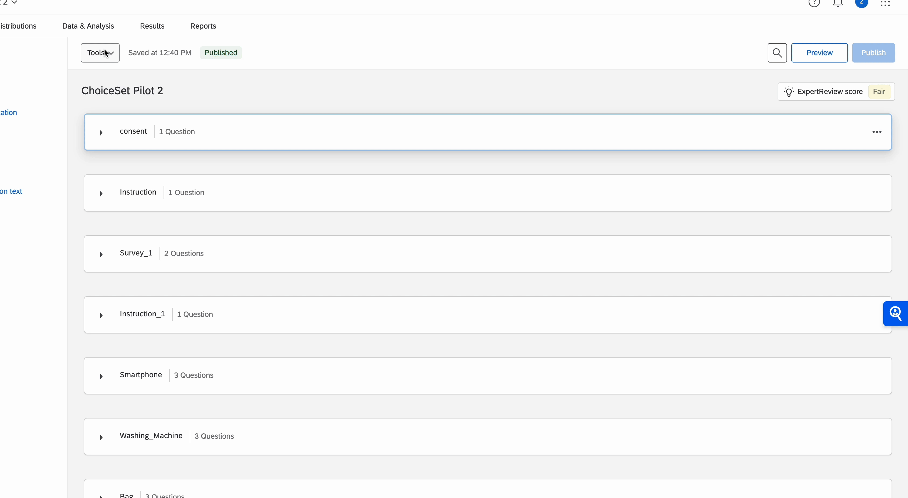
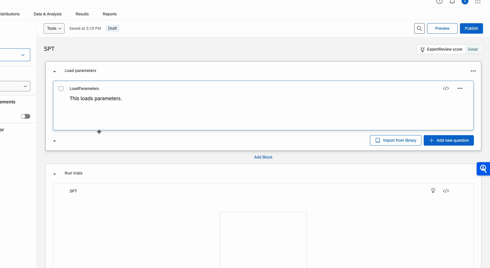

On the bottom of our website, there is a button for you to click to download a version of the QSF file, which allows you to upload it to embed in Qualtrics design.
Load Your QSF File into Qualtrics

Follow the instructions to load the QSF file into Qualtrics.
Add More Rounds for Your Trial

If you have added more rounds in your trials design on SP-Builder, then you need to copy blocks of design as shown in the GIF.